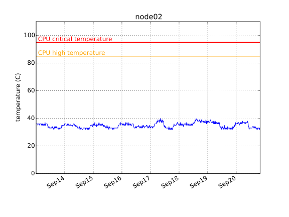
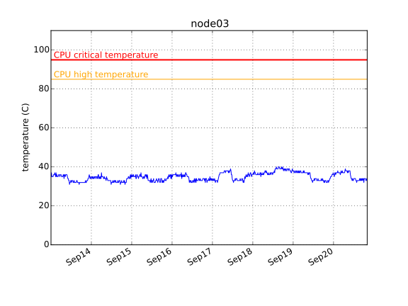
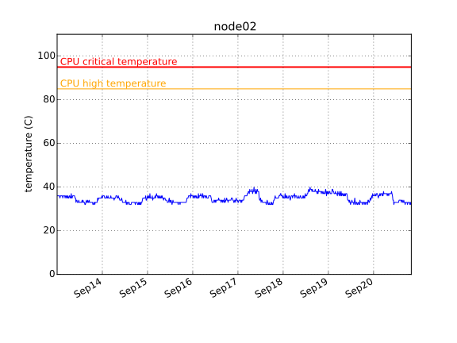
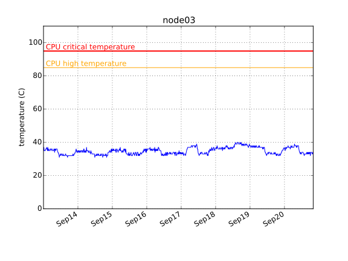
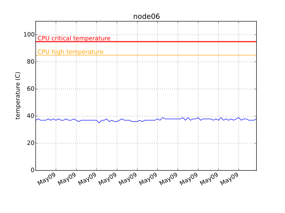
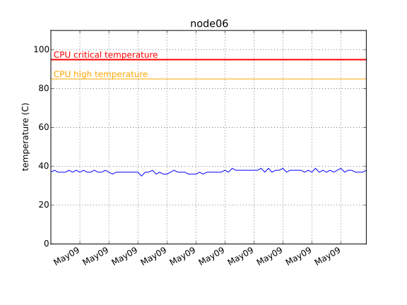

2014-07-17 03:00
| host name | disk | time checked | overall health | power_on hours | pre-fail symptons |
|---|---|---|---|---|---|
| headnode | /dev/sda | Wed Jul 16 20:00:01 2014 PDT | PASSED | 5647 | NONE (Raw_Read_Error_Rate = 0. Reallocated_Sector_Ct = 0. ) |
| headnode | /dev/sdb | Wed Jul 16 20:00:01 2014 PDT | PASSED | 5715 | NONE (Raw_Read_Error_Rate = 0. Reallocated_Sector_Ct = 0. ) |
| headnode | /dev/sdc | Wed Jul 16 20:00:01 2014 PDT | PASSED | 2186 | NONE (Raw_Read_Error_Rate = 0. Reallocated_Sector_Ct = 0. ) |
| headnode | /dev/sdd | Wed Jul 16 20:00:01 2014 PDT | PASSED | 2234 | NONE (Raw_Read_Error_Rate = 0. Reallocated_Sector_Ct = 0. ) |
| headnode | /dev/sde | Wed Jul 16 20:00:01 2014 PDT | PASSED | 1044 | NONE (Raw_Read_Error_Rate = 0. Reallocated_Sector_Ct = 0. ) |
| node01 | /dev/sda | Wed Jul 16 20:00:01 2014 PDT | PASSED | 5831 | NONE (Raw_Read_Error_Rate = 0. Reallocated_Sector_Ct = 0. ) |
| node02 | /dev/sda | Wed Jul 16 20:00:01 2014 PDT | PASSED | 5735 | NONE (Raw_Read_Error_Rate = 0. Reallocated_Sector_Ct = 0. ) |
| node03 | /dev/sda | Wed Jul 16 20:00:01 2014 PDT | PASSED | 5732 | NONE (Raw_Read_Error_Rate = 0. Reallocated_Sector_Ct = 0. ) |
| node04 | /dev/sda | Wed Jul 16 20:00:01 2014 PDT | PASSED | 299 | NONE (Raw_Read_Error_Rate = 0. Reallocated_Sector_Ct = 0. ) |
| node06 | /dev/sda | Wed Jul 16 20:00:01 2014 PDT | PASSED | 295 | NONE (Raw_Read_Error_Rate = 0. Reallocated_Sector_Ct = 0. ) |

 



 
